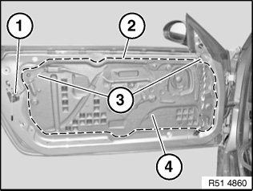
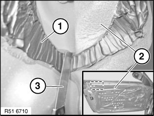
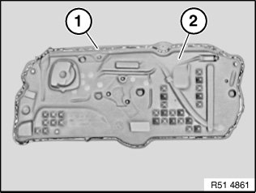
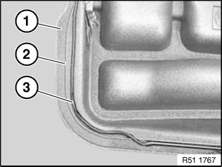

51 48 060 Removing and Installing/Replacing Sound Insulation In Left or Right Front Door
51 48 060 Removing and installing/replacing sound insulation in left or right front door

IMPORTANT:
- Instructions for sound insulation are an essential part of these repair instructions and must be followed without fail.
- Do not detach sound insulation in jerks (risk of damage).
- It is essential to ensure the sound insulation is watertight (water intrusion) every time any repair work has been carried out.

Necessary preliminary tasks:
- Remove door trim panel

If necessary, disconnect plug connection (1).
Position of sealing bead (2).
Feed cable (3) out of sound insulation (4) and remove sound insulation (4).

IMPORTANT: When cutting through sealing bead (1), do not damage sound insulation (2) and if necessary cable.
With a suitable sharp cutting tool (3) cut through sealing bead (1) of sound insulation (2) in the area to be detached.
Clean bonding area with adhesive remover (sourcing reference: BMW Parts Service).
Air drying time: 1 minute
IMPORTANT:
- Adhesive areas must be dry and free of dust and grease.
- Once it has been cleaned, do not touch the adhesive area with bare hands.

NOTE:
Replacement:
- Lay 6 mm dia. butyl rope (sourcing reference: BMW Parts Department) in specified adhesive area.
- Heat butylene tape (hot air blower) and press down firmly on sound insulation all round.
- Contact pressure with hand roller: approx. 20 N/cm2
- Manual contact pressure: approx. 10 N/cm2
- Firm thumb pressure has approx. 30 N/cm2

NOTE: Position of butyl rope (1) on sound insulation (2).

NOTE:
- A marking (2) is provided all round on the sound insulation (1).
- Butyl rope (3) rests on or inside the marking (2).